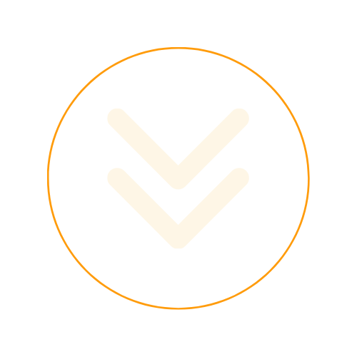

I craft impactful web solutions that drive success and growth.
Scroll For More
About
An Empowering Creativity Through Code and Design!
Hi,I'm Aswini P, a dedicated web developer and designer currently pursuing a Bachelor of Computer Applications at Jain University, Bangalore. My journey in technology began with a fascination for how things work behind the scenes, leading me to explore the dynamic world of web development. I've had the privilege of interning at Codespaze, where I honed my skills in creating innovative, user-centric web solutions alongside a talented team.
In addition to my technical abilities, I have a keen eye for design, which I’ve developed through my involvement with my university’s design team. I'm also committed to continuous learning and growth, currently advancing my front-end development skills through the Meta Front-End Development course on Coursera.


01.
Web Development
Proficient in web development with expertise in HTML and CSS, skilled at styling elements, creating engaging animations, and developing responsive designs that enhance user experience across devices.
02.
Content Writing
Experienced in content writing for Instagram, crafting engaging and visually appealing posts for _ccoffical that resonate with the audience and enhance social media presence.
03.
Graphic Design
With over 3 years of experience in Canva, I crafted impactful designs and contributed as a design team member for My University Navaritih Forum.
04.
Team Collaboration
Proven ability to work effectively in teams, both in academic settings and internships, contributing to presentations, University Forum Activites, research papers, and group projects.
I am skilled in front-end web development, proficient in HTML and CSS,passionate about creating responsive and dynamic websites. I have experience in design, web development, and innovation, with a focus on practical solutions.
I am a passionate and skilled web developer with a solid foundation in front-end technologies, specializing in HTML5, CSS3. My expertise extends to creating visually appealing and responsive websites, with a keen eye for detail in design and user experience.
With over three years of graphic design experience using Canva, I bring creativity to every project. Additionally, I have strong problem-solving abilities, a collaborative mindset, and experience in styling elements for dynamic, user-friendly interfaces. I am constantly learning and adapting to new technologies, ensuring my work is both innovative and effective.
 Html
Html
Let's Start the New Journey Together.